2025年北京市大兴区中考化学试卷 原卷解析
2025年北京市初中学业水平考试
化学试卷(大兴卷)
考生须知：
1.本试卷共8页，共两部分，35道小题，满分60分。考试时间70分钟。
2.在试卷和答题卡上准确填写学校、班级、姓名、准考证号。
3.试题答案一律填涂或书写在答题卡上，在试卷上作答无效。
4.在答题卡上，选择题用2B铅笔作答，其他试题用黑色字迹签字笔作答。
可能用到的相对原子质量：H：1 C：12 O：16 Mg：24
第一部分
一、本部分共25题，每题1分，共25分。在每题列出的四个选项中，选出最符合题目要求的一项。
1. 下列变化中，属于化学变化的是（ ）
A. 衣服晾干B. 木柴燃烧
C.
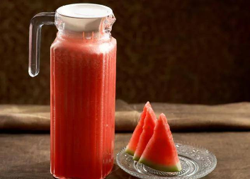
西瓜榨汁D. 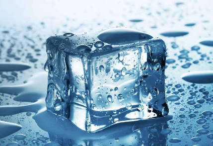
冰块融化【答案】B
【解析】
【详解】A、衣服晾干是水分蒸发的过程，属于物理变化，故A错；
B、木柴燃烧生成二氧化碳和水等物质，属于化学变化，故B正确；
C、西瓜榨汁只是将其汁液提取出来，属于物理变化，故C错；
D、冰块融化是由固态变为液态，只是状态的改变，属于物理变化，故D错。
故选B。
【点睛】判断的标准是看在变化中有没有生成其他物质。一般地，物理变化有物质的固、液、气三态变化和物质形状的变化。
2. 空气成分中，体积分数最大的是（ ）
A. 氮气B. 二氧化碳C. 氧气D. 稀有气体
【答案】A
【解析】
空气的成分按体积计算，大约是：氮气占78%、氧气占21%、稀有气体占0.94%、二氧化碳占0.03%、其它气体和杂质占0.03%。
3. “垃圾分类，我们一起来。”西瓜皮属于
A. 其他垃圾B. 厨余垃圾C. 可回收物D. 有害垃圾
【答案】B
【解析】
【详解】A、其他垃圾是指可回收垃圾、厨余垃圾、有害垃圾之外的其他垃圾，西瓜皮属于厨余垃圾，故选项错误；
B、厨余垃圾用于回收各种厨房垃圾，西瓜皮属于厨余垃圾，故选项正确；
C、可回收物是指各种废弃金属、金属制品、塑料等可回收的垃圾，西瓜皮属于厨余垃圾，故选项错误；
D、有害垃圾是指造成环境污染或危害人体健康的物质，西瓜皮属于厨余垃圾，故选项错误；
故选：B。
4. 化石燃料是不可再生的能源，下列不属于化石燃料的是
A. 煤B. 石油C. 乙醇D. 天然气
【答案】C
【解析】
【详解】化石燃料包括煤、石油和天然气。乙醇不是化石燃料，故选C。
5. 如图所示的图标表示
A. 禁止吸烟B. 禁止燃放鞭炮
C. 禁止带火种D. 禁止堆放易燃物
【答案】B
【解析】
【详解】图示标志表示禁止燃放鞭炮，故选：B。
6. 下列物质在氧气中燃烧，火星四射、生成黑色固体的是（ ）
A. 铁丝B. 红磷C. 甲烷D. 氢气
【答案】A
【解析】
【详解】A、铁丝在氧气中燃烧，火星四射、生成黑色固体，故符合题意；
B、红磷在氧气中燃烧，冒出大量白烟，放出大量热，故不符合题意；
C、甲烷在氧气中燃烧，发出淡蓝色火焰，放出大量热，故不符合题意；
D、氢气在氧气中燃烧，发出淡蓝色火焰，放出大量热，故不符合题意。
7. 下列生活用品，利用金属导电性的是
A. 铁锅B. 铜导线C. 铝箔纸D. 银饰品
【答案】B
【解析】
【详解】A、铁锅主要利用金属的导热性，不符合题意；
B、铜导线主要利用的是金属的导电性，符合题意；
C、铝箔包装纸主要利用的是金属的延展性和导热性，不符合题意；
D、银饰品主要利用的是金属的延展性和金属光泽，不符合题意；
故选：B。
8. 下列实验操作不正确的是
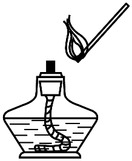 | 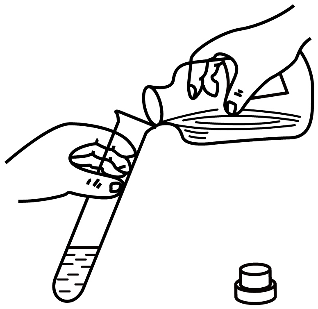 |
A．点燃酒精灯 | B．倾倒液体 |
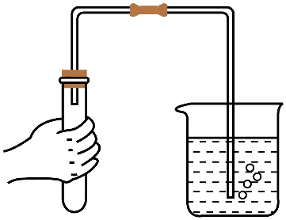 | 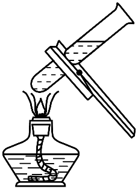 |
C．检查气密性 | D．加热液体 |
A. AB. BC. CD. D
【答案】D
【解析】
【详解】A、使用酒精灯时要注意用火柴点燃，禁止用一酒精灯去引燃另一酒精灯，图中所示操作正确，不符合题意；
B、向试管中倾倒液体药品时，瓶塞要倒放，标签要对准手心，瓶口紧挨，所示操作正确，不符合题意；
C、检查装置气密性的方法：把导管的一端浸没在水里，双手紧贴容器外壁，若导管口有气泡冒出，装置不漏气；图中所示操作正确，不符合题意；
C、给试管中的液体加热时，用酒精灯的外焰加热试管里的液体，且液体体积不能超过试管容积的，试管夹夹在试管的中上部，图中所示操作中没有用酒精灯的外焰加热，液体体积超过试管容积的，试管夹夹在试管的中部，图中所示操作错误，符合题意。
故选D。
9. “高钙牛奶”中的“钙”指的是
A. 分子B. 原子C. 元素D. 单质
【答案】C
【解析】
【详解】“高钙牛奶”中的“钙”所强调的钙是说明这些物质的存在，而不关注以什么形式存在，或者便于说明如何存在，所以就用宏观的元素种类来说明，与具体形态无关。
故选C。
10. 水是重要的资源。下列做法不利于保护水资源的是
A. 使用节水龙头B. 用洗菜水浇花C. 防治海洋垃圾污染D. 任意排放生活污水
【答案】D
【解析】
【详解】A、使用节水型水龙头，可以节约用水，保护水资源，不符合题意；
B、洗菜水用于浇花，可以实现“一水多用”，节约用水，不符合题意；
C、防治海洋垃圾污染，可以保护水资源，不符合题意；
D、任意排放生活污水，会污染水源，应处理后排放，符合题意；
故选D。
11. 化学肥料可提高农作物的产量，下列物质能用作钾肥的是
A. K2SO4B. NH4Cl
C. NH4NO3D. Ca(H2PO4)2
【答案】A
【解析】
【详解】A、硫酸钾含钾元素，属于钾肥，故A正确；
B、氯化铵含氮元素，不含钾元素，属于氮肥，故B错误；
C、硝酸铵含氮元素，不含钾元素，属于氮肥，故C错误；
D、磷酸二氢钙含磷元素，不含钾元素，属于磷肥，故D错误。
故选A。
12. 下列不属于氧气用途的是
A. 气焊B. 食品防腐C. 炼钢D. 医疗急救
【答案】B
【解析】
【详解】A、氧气具有助燃性，能够支持燃烧，可用于气焊，选项正确；
B、氧气的化学性质比较活泼，能够与很多物质发生化学反应，不可用于食品防腐，选项错误；
C、氧气具有助燃性，能够与生铁中的碳在高温的条件下反应生成二氧化碳，能够降低生铁中的含碳量，可用于炼钢，选项正确；
D、氧气能够支持呼吸，可用于医疗急救，选项正确，故选B。
13. 下列物质含有氢分子的是
A. Ca（OH）2B. H2CO3C. H2O2D. H2
【答案】D
【解析】
【分析】本题考查微粒的组成。
【详解】A、氢氧化钙中没有氢分子，故A不符合题意；
B、碳酸中没有氢分子，故B不符合题意；
C、过氧化氢中没有氢分子，故C不符合题意；
D、氢气是由氢气分子构成的，故D符合题意；
故选D。
【点睛】本题难度不大，熟记即可。
14. 清明放风筝。下列与风筝制作、放飞相关的部件中，用到金属材料的是
A. 竹质骨架B. 纸质风筝面C. 棉质捆扎线D. 不锈钢手握轮
【答案】D
【解析】
【详解】A、竹质骨架属于天然材料，错误；
B、纸质风筝面属于天然材料，错误；
C、棉质捆扎线属于天然材料，错误；
D、不锈钢手握轮是由不锈钢制成，不锈钢属于金属材料，正确；
故选D。
15. 下列标志应标识在浓硫酸试剂瓶上的是
A.
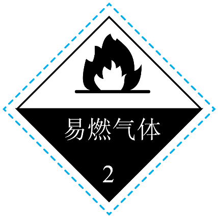
B. 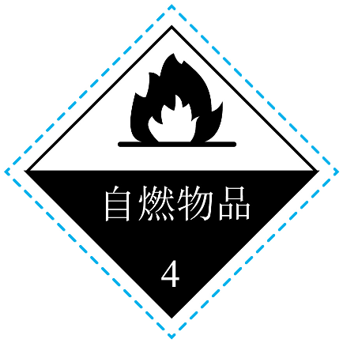
C. D.
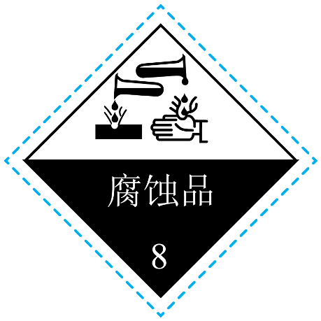
【答案】D
【解析】
【详解】浓硫酸具有强烈的腐蚀性，试剂瓶上应贴腐蚀品标志。
A、图中所示标志是易燃气体标志，错误；
B、图中所示标志是自燃物品标志，错误；
C、图中所示标志是爆炸品标志，错误；
D、图中所示标志是腐蚀品标志，正确。
故选D。
16. 下列物质中，不需要密封保存的是
A. 浓硫酸B. 氢氧化钠C. 大理石D. 浓盐酸
【答案】C
【解析】
【详解】A、浓硫酸有吸水性，不密封保存会吸收空气中的水分而被稀释，所以错误；
B、氢氧化钠能吸收空气中的水蒸气潮解，且能和空气中的二氧化碳反应生成碳酸钠和水而变质，所以错误；
C、大理石的主要成分是碳酸钙，它的空气中的成分不反应，也不会吸水潮解，所以正确；
D、浓盐酸具有挥发性，常会因为挥发导致溶液变稀，所以错误；
故选C。
17. 一些物质的pH范围如下，其中呈碱性的是
A. 柠檬汁（2-3）B. 酱油（4-5）C. 西瓜汁（5-6）D. 洗发水（8-9）
【答案】D
【解析】
【分析】当溶液的pH等于7时，呈中性；当溶液的pH大于7时，呈碱性；当溶液的pH小于7时，呈酸性。
【详解】A、柠檬汁的pH为2-3，pH＜7，呈酸性；
B、酱油的pH为4-5，pH＜7，呈酸性；
C、西瓜汁的pH为5-6，pH＜7，呈酸性；
D、洗发水的pH为8-9，pH＞7，呈碱性。
故选D。
18. 两集气瓶中分别盛装二氧化碳和氧气。下列方法能区分两种气体的是
A. 观察颜色B. 加入澄清石灰水C. 闻气味D. 加入氢氧化钠溶液
【答案】B
【解析】
【详解】A、氧气和二氧化碳均为无色气体，用观察颜色的方法不能鉴别，故选项错误；
B、二氧化碳能使澄清的石灰水变浑浊，氧气不能，可以鉴别，故选项正确；
C、氧气和二氧化碳均为没有气味，用闻气味的方法不能鉴别，故选项错误；
D、分别加入适量的氢氧化钠溶液，二氧化碳能与氢氧化钠溶液反应生成碳酸钠和水，但无明显现象，氧气不能与氢氧化钠溶液反应，也无现象，不能鉴别，故选项错误。
故选B。
孔雀石[主要成分为]可作为提炼铜()的矿物原料。回答问题。
19. 组成的元素中，属于金属元素的是
A. CuB. OC. D.
20. 受热易分解。下列物质不可能是其分解产物的是
A. B. C. D.
【答案】19. A 20. C
【解析】
【19题详解】
孔雀石由铜元素、氧元素、氢元素和碳元素组成，属于金属元素的为铜元素，故选A。
【20题详解】
孔雀石由铜元素、氧元素、氢元素和碳元素组成，由质量守恒定律可知，反应前后元素种类不变，则其分解产物可能是H2O、CuO、CO2，但不可能含有氮元素，故选C。
镍及其化合物在众多领域发挥着关键作用。镍元素在元素周期表中的信息如图。回答问题。
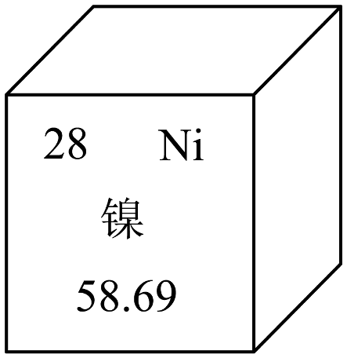
21. 下列有关镍元素的说法不正确的是
A. 原子序数是28B. 属于金属元素C. 元素符号是NiD. 相对原子质量为
22. 镍原子的质子数是
A. 28B. 30C. 58D. 86
23. 氧化镍(NiO)在玻璃工业中用于制造有色玻璃。氧化镍中镍元素(Ni)的化合价为
A. +1B. +2C. +3D. +4
【答案】21. D 22. A 23. B
【解析】
【21题详解】
A、元素周期表中，左上角的数字表示原子序数，则原子序数是28，该选项说法正确；
B、镍为“钅”字旁，属于金属元素，该选项说法正确；
C、镍元素的元素符号为Ni，该选项说法正确；
D、元素周期表中，最下方的数字表示相对原子质量，则相对原子质量为58.69，相对原子质量单位不为“g”，该选项说法错误。
故选D。
【22题详解】
元素周期表中，左上角的数字表示原子序数，在原子中，质子数=核外电子数=原子序数，故镍原子的质子数是28，故选A。
【23题详解】
根据化合物化合价代数和为0，因为氧元素化合价为-2，故氧化镍中镍元素(Ni)的化合价为+2，故选B。
24. 的溶解度曲线如图所示。下列说法不正确的是
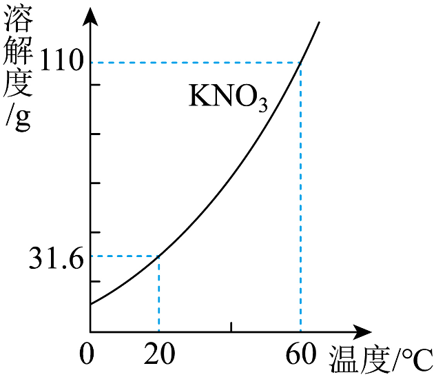
A. 0~60℃，的溶解度随温度升高而增大
B. 60℃时，水中最多溶解
C. 20℃时饱和溶液的溶质质量分数为31.6%
D. 20℃时，将加入水中所得溶液为不饱和溶液
【答案】C
【解析】
【详解】A、由图可知，0~60℃，KNO3的溶解度随温度升高而增大，不符合题意；
B、60℃时，硝酸钾的溶解度为110g，故60℃时，100g 水中最多溶解110g KNO3，不符合题意；
C、20℃时，硝酸钾的溶解度为31.6g，该温度下，硝酸钾饱和溶液中溶质的质量分数为：，符合题意；
D、20℃时，硝酸钾的溶解度为31.6g，将加入水中所得溶液为不饱和溶液，不符合题意。
故选：C。
25. 某种火箭推进剂在火箭发射过程中，反应前后分子种类变化的微观示意图如下。下列说法不正确的是
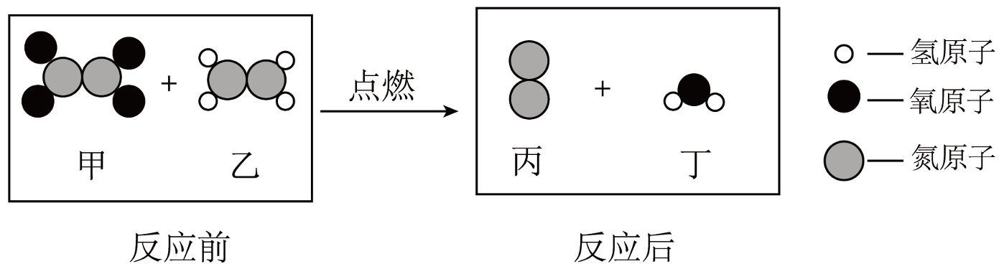
A. 甲由氮、氧元素组成B. 丙的化学式为
C. 丁为水D. 反应前后原子种类发生变化
【答案】D
【解析】
【详解】A、根据图示，甲的化学式为N2O4，其由氮元素（N）和氧元素（O）组成 ，该选项正确。
B、丙物质的1个分子由2个氮原子构成，化学式为N2，该选项正确。
C、根据图示，丁物质的化学式为H2O，所以丁为水，该选项正确。
D、根据质量守恒定律，化学反应前后原子的种类、数目和质量都不变。从微观示意图也可看出，反应前后原子的种类没有改变，该选项错误。
综上，答案选D。
第二部分
二、本部分共10题，共35分
【实际问题的分析与解决】
26. 周末，小明同学为家人烤制面包。
（1）调制面团时，加入小苏打。小苏打的化学式为___________(填序号)。
A. B. C.
（2）面包烤制过程中会闻到香味，体现分子具有的性质是___________。
【答案】（1）A （2）分子是在不断地运动
【解析】
【小问1详解】
小苏打是碳酸氢钠的俗称，其化学式为NaHCO3，故选A；
【小问2详解】
面包烤制过程中会闻到香味，是因为面包中含有的分子是在不断地运动，向四周扩散，使人们闻到香味。
27. 氢能是绿色能源。制氢、储氢、释氢过程中涉及的部分物质转化如下：
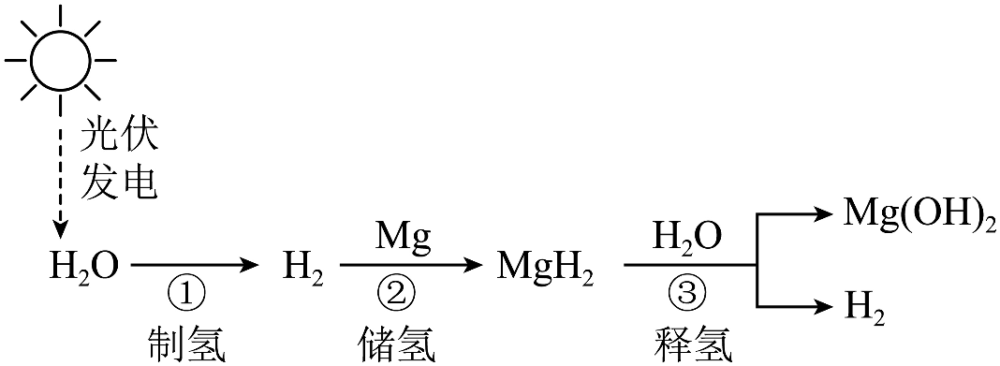
（1）①中水通电分解，产物为和___________。
（2）若②中参加反应，计算理论上储存的质量。请补全下列计算过程___________。
解：设理论上储存的质量为x。 |
|
48kg x |
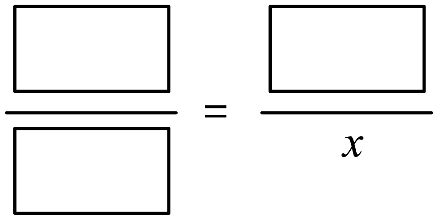 kg |
答：理论上储存的质量为kg |
（3）配平③反应化学方程式___________。
【答案】（1）氧气 （2）解：设理论上储存H2的质量为x。
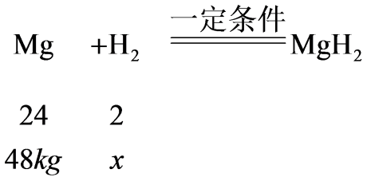
x=4kg
答：理论上储存的质量为4kg。
（3）
【解析】
【小问1详解】
水通电分解，产物为氢气和氧气；
【小问2详解】
见答案；
【小问3详解】
配平依据质量守恒定律，反应前后原子种类和数目不变。
镁原子（Mg）：反应前后各 1 个，已平衡。
氧原子（O）：产物Mg(OH)2含 2 个 O，故反应物H2O前配2（提供 2 个 O）。
氢原子（H）：反应物：MgH2含 2 个 H，2H2O含4个 H，共6个H。生成物：Mg(OH)2含2个H，2H2含4个H，共6个H，平衡。
配平结果：。
28. 如图为某食品专用发热包说明书中部分信息。
[品名]食品专用发热包 [主要成分]氧化钙、铝粉、碳酸钠使用方法]撕开塑料袋后加常温水发热 [注意事项]使用时要远离明火； …… |
（1）发热包的主要成分中，属于单质的是___________。
（2）撕开塑料袋加水后，发生的反应有：
i．
ii．
iii．
①i和iii均为放热反应，其中属于化合反应的是___________(填“i”或“iii”)。
②ii中X为___________。
（3）结合所学知识，补充注意事项___________(写出1条即可)。
【答案】（1）铝粉 （2） ①. i ②. NaOH
（3）密封保存，存放在阴凉干燥处
【解析】
【小问1详解】
发热包的主要成分是氧化钙、铝粉、碳酸钠，氧化钙是由两种元素组成，其中一种是氧元素的化合物，属于氧化物；铝是由一种元素组成的纯净物，属于单质；碳酸钠是由钠离子和碳酸根离子构成的化合物，属于盐，故填：铝粉；
【小问2详解】
①i和iii均为放热反应，化合反应是由两种物质反应生成一种物质的反应，其中属于化合反应的是i；
②根据化学式可知，反应前钙、氧、氢、钠、碳原子个数分别为：1、5、2、2、1，反应前钙、氧、氢、钠、碳原子个数分别为：1、3、0、0、1，缺少2个钠原子、2个氧原子和2个氢原子，X的化学式为：NaOH；
【小问3详解】
氧化钙与水反应能生成氢氧化钙，且放热包使用时要远离明火；补充注意事项：密封保存，存放在阴凉干燥处。
【科普阅读理解】
29. 阅读下面科普短文。日常生活中所说的盐通常指食盐(主要成分是NaCl)。NaCl是海水中含量最多的溶质。因此可以用海水为原料生产食盐，其方法称为浅池蒸发法，具体过程如图1.
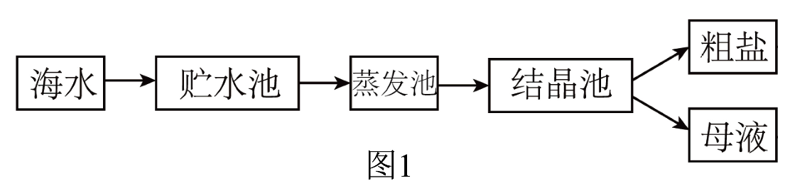
是生活中常用的调味品。的浓溶液还有杀菌作用，当细菌遇到的浓溶液时，细菌细胞内外液体形成浓度差，细菌会因失水而死亡，从而起到杀菌的目的。用浓盐水腌制蔬菜、鱼肉等食物时，既防腐败又增添了风味。实验人员研究了溶液的溶质质量分数对咸蛋黄感官品质的影响，实验结果如图2。
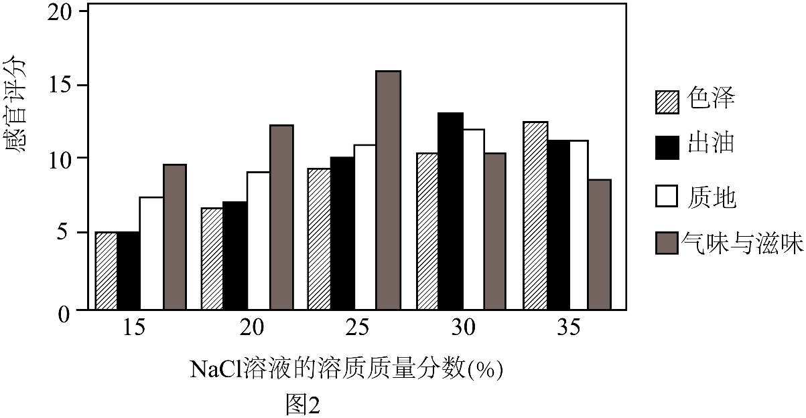
不仅是人类生活中不可或缺的基础物质，在工业领域也发挥着重要作用。
(原文作者黄晨燕，有删改)
依据文章内容回答下列问题。
（1）食盐的主要成分为___________。
（2）判断下列说法是否正确(填“对”或“错”)。
①图1中，得到的粗盐属于混合物。___________。
②图1中，得到的母液是的不饱和溶液。___________。
（3）的浓溶液可用于杀菌，其原因是___________。
（4）由图2可获得的信息：___________(写出1条即可)。
【答案】（1）氯化钠##NaCl
（2） ①. 对 ②. 错
（3）当细菌遇到NaCl的浓溶液时，细菌细胞内外液体形成浓度差，细菌会因失水而死亡
（4）随着NaCl溶液溶质质量分数从15%增加到35%，咸蛋的出油量先增大后减小（合理即可）
【解析】
【小问1详解】
文中明确提到“日常生活中所说的食盐通常指食盐(主要成分是NaCl)”，所以食盐的主要成分是氯化钠（NaCl）。
【小问2详解】
①粗盐中含有氯化钠、氯化钙、氯化镁等多种物质，由多种物质组成的物质属于混合物，所以晒得的粗盐属于混合物，该说法正确。
②结晶池中析出氯化钠晶体后，剩余的母液是该温度下氯化钠的饱和溶液，因为已经达到了氯化钠在该条件下溶解的最大量，不能再继续溶解氯化钠了，所以“得到的母液是NaCl的不饱和溶液”说法错误。
【小问3详解】
文中提到“当细菌遇到NaCl的浓溶液时，细菌细胞内外液体形成浓度差，细菌会因失水而死亡，从而起到杀菌的目的”，这就是NaCl的浓溶液可用于杀菌的原因。
【小问4详解】
观察图2可知，随着NaCl溶液的溶质质量分数变化，咸蛋的色泽、出油、质地、气味与滋味等感官品质指标也在变化。比如在NaCl溶液的溶质质量分数在25%~30%时，各项感官品质指标相对都比较较好；随着NaCl溶液溶质质量分数从15%增加到25%左右，咸蛋的出油量逐渐增多。
【基本实验及其原理分析】
30. 根据下图回答问题。
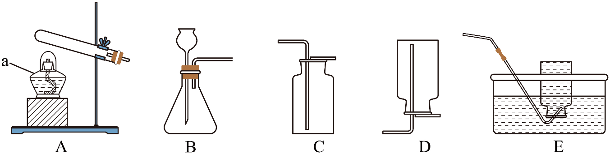
（1）仪器a的名称为___________。
（2）实验室用制取反应的化学方程式为___________。
（3）实验室用大理石和稀盐酸制取时，选用的发生装置是___________(填序号)。
（4）收集可采用E装置的原因是___________。
【答案】（1）酒精灯 （2）
（3）B （4）氧气不易溶于水
【解析】
【小问1详解】
仪器a是酒精灯；
【小问2详解】
高锰酸钾加热生成锰酸钾、二氧化锰和氧气，化学方程式为；
【小问3详解】
实验室用大理石和稀盐酸制取CO2时，该反应为固液常温型，选用发生装置B；
【小问4详解】
因为氧气不易溶于水，收集O2可采用E装置排水法。
31. 实验室配制溶质质量分数为16%的溶液。
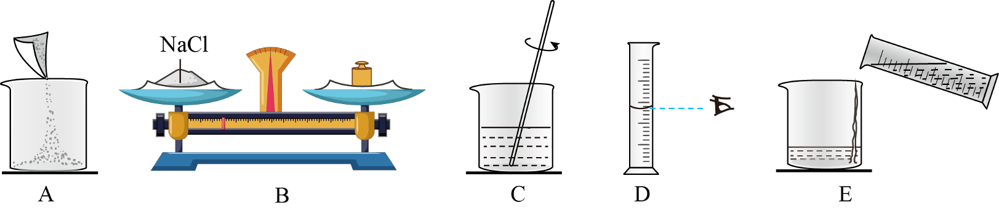
（1）正确的实验操作顺序为___________(填序号)。
（2）C中玻璃棒的作用是___________。
【答案】（1）BADEC （2）搅拌，加速溶解
【解析】
【小问1详解】
配制50g溶质质量分数为16%的NaCl溶液，首先计算配制溶液所需氯化钠和水的体积，再称量所需的氯化钠和量取水，最后进行溶解，故正确的实验操作顺序为BADEC；
【小问2详解】
C操作是溶解，玻璃棒的作用是搅拌，加速溶解。
32. 用如图所示实验验证可燃物燃烧的条件。
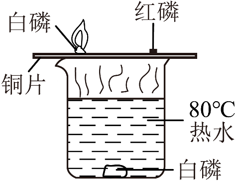
已知：白磷的着火点为40℃，红磷的着火点为260℃。
（1）水中白磷未燃烧的原因是___________。
（2）能证明可燃物燃烧需要温度达到着火点的现象是___________。
【答案】（1）没有与氧气接触
（2）铜片上白磷燃烧，红磷不燃烧
【解析】
【小问1详解】
水中白磷没有与氧气接触，故水中白磷未燃烧；
【小问2详解】
实验目的是验证温度需要达到着火点，可燃物燃烧，所以选取对比实验中唯一变量为温度，在B与C中可燃物相同，都与氧气接触，只有温度不同，所以可以观察铜片上白磷燃烧，红磷不燃烧的现象得出实验结论，达到实验目的。
33. 用下图所示实验研究的性质。
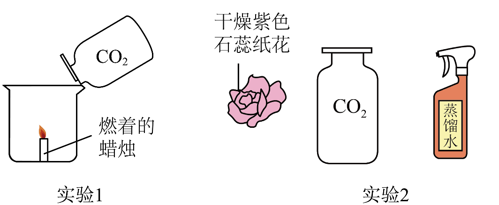
（1）实验1观察到的现象是___________。
（2）实验2的目的是证明能与发生化学反应，其实验操作为___________。
【答案】（1）蜡烛熄灭
（2）将干燥紫色石蕊小花直接放入盛满CO2的集气瓶中，观察小花变色情况；取出小花，用蒸馏水喷湿，再次放入盛满CO2的集气瓶中，观察小花变色情况。
【解析】
【小问1详解】
二氧化碳的密度大于空气，二氧化碳不能燃烧，也不支持燃烧，则蜡烛熄灭；
【小问2详解】
二氧化碳与水反应生成碳酸，碳酸显酸性，能是紫色石蕊变红，则证明CO2与H2O发生了化学反应；则设计：第一步：将干燥紫色石蕊小花直接放入盛满CO2的集气瓶中，观察到小花不变色，说明干燥CO2不能使石蕊变色；第二步：取出小花，用蒸馏水喷湿，再次放入盛满CO2的集气瓶中，观察到小花变红，说明CO2与H2O反应生成碳酸，使石蕊变色；故填：将干燥紫色石蕊小花直接放入盛满CO2的集气瓶中，观察小花变色情况；取出小花，用蒸馏水喷湿，再次放入盛满CO2的集气瓶中，观察小花变色情况。
34. 补全实验报告。
装置及操作 | 现象 | 解释或结论 |
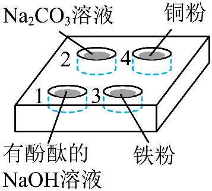 | 向1、2、3、4中分别滴加稀盐酸 | 1中红色褪去 | 反应的化学方程式为___________ |
2中产生气泡 | 生成的气体为___________ |
___________ | 铁的金属活动性比铜的强 |
【答案】 ①. ②. 二氧化碳##CO2 ③. 3中有气泡产生，但4中没有
【解析】
【详解】1中氢氧化钠和盐酸反应生成氯化钠和水，反应的化学方程式为：；
碳酸钠和盐酸反应生成氯化钠、水和二氧化碳，则产生的气体为二氧化碳；
金属活动性顺序：Fe>（H）>Cu，铁能和盐酸反应，但铜不能和盐酸反应，则可证明铁比铜活泼的现象为3中有气泡产生，但4中没有。
【科学探究】
35. 硝酸钡[
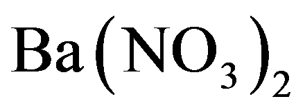
]是一种重要的无机盐产品，可利用碳酸钡()和硝酸铵()反应进行制备。研究人员通过实验探究影响该反应效果的因素。【查阅资料】①在一定条件下碳酸钡与硝酸铵反应：
②难溶于水。
【进行实验】称量一定质量的，用水溶解在烧瓶中，配成所需要的浓度。再加入粉末于烧瓶中，插入空气导管并接通气泵，通入空气。在一定温度下搅拌后，对剩余的进行减压过滤、洗涤，干燥后称重。
实验记录如下：
实验 | 温度/℃ | 溶液的溶质质量分数/% | 通入空气的导管数目/个 | 剩余的质量/g |
① | 60 | 5 | 1 | 28.60 |
② | 80 | | 1 | 27.76 |
③ | 90 | 5 | 1 | 24.09 |
④ | 98 | 5 | 1 | 22.23 |
⑤ | 98 | 15 | 1 | 11.23 |
⑥ | 98 | 25 | 1 | 7.00 |
⑦ | 98 | 5 | 2 | 23.27 |
⑧ | 98 | 5 | 4 | 24.60 |
【解释与结论】
（1）溶液中，溶质为___________。
（2）实验①~④是探究温度对反应效果的影响。实验②中为___________。
（3）依据实验④~⑥数据可得出“在温度、通入空气的量等条件相同时，溶液的溶质质量分数越大，反应效果越好”的结论，其证据是___________。
（4）探究通入空气的量对反应效果影响的实验是___________(填序号)。
【进一步探究】
（5）若要探究搅拌时间对反应效果的影响，在其他操作不变的前提下，需要控制的变量有___________。
【答案】（1）硝酸铵##NH4NO3
（2）5 （3）在温度、通入空气的量等条件相同时，NH4NO3溶液的溶质质量分数越大，剩余BaCO3的质量越小 （4）④⑦⑧ （5）搅拌时间
【解析】
【小问1详解】
NH4NO3溶液中，溶质为硝酸铵（或NH4NO3）
【小问2详解】
实验①～④是探究温度对反应效果的影响，其他条件需相同，为了进行对比，实验②中x为5；
【小问3详解】
依据实验④～⑥数据可得出“在温度、通入空气的量等条件相同时，NH4NO3溶液的溶质质量分数越大，反应效果越好”的结论，其证据是在温度、通入空气的量等条件相同时，NH4NO3溶液的溶质质量分数越大，剩余BaCO3的质量越小；
【小问4详解】
探究通入空气的量对反应效果影响的实验是④⑦⑧（除去通入空气的量不同外，其它条件相同）；
【小问5详解】
若要探究搅拌时间对反应效果的影响，在其他操作不变的前提下，需要控制的变量是搅拌时间。